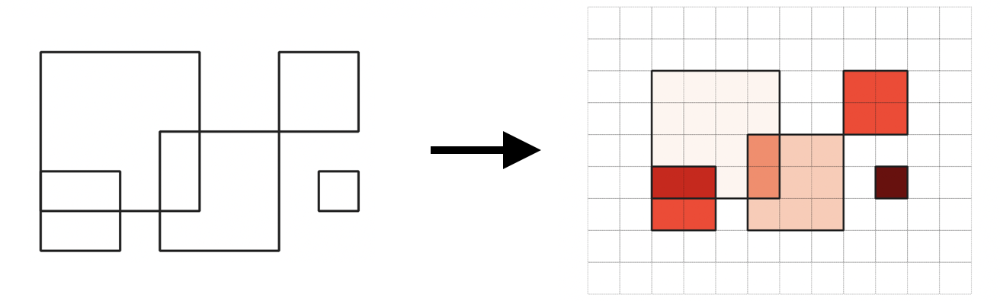

Spatal Access Priority Mapping (sap-map)¶
Overview¶
sapmap takes the areas that a group identifies as important and combines them into a map of spatial access priorities (SAP)
This aggregate map is used in area-based planning exercises for identifying where important areas exist and measuring the impact if changes in access are made.
Common questions these maps can answer include:
Which geographic areas are important to the group? The most important? The least important?
Is area A of more value to the group than area B? How much more?
If the use of a given area is changed, will people be impacted? How much of the groups value is within this area?